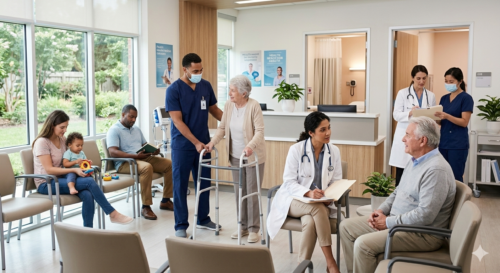
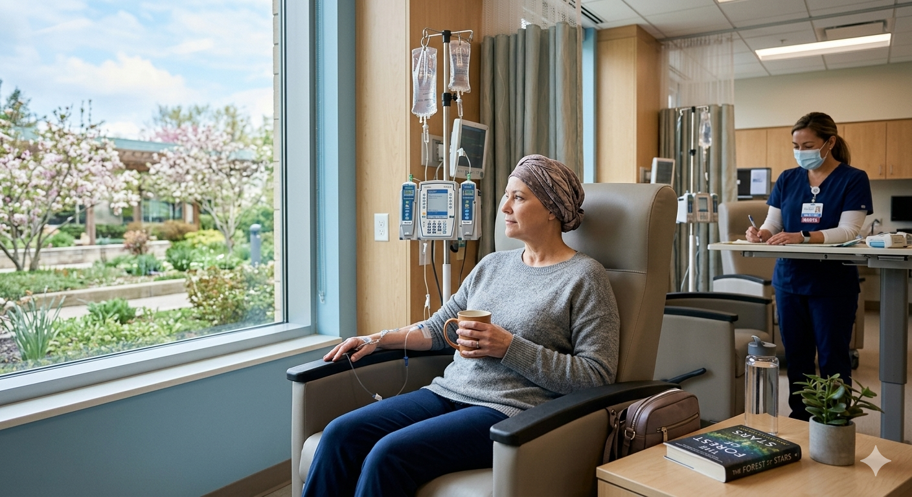
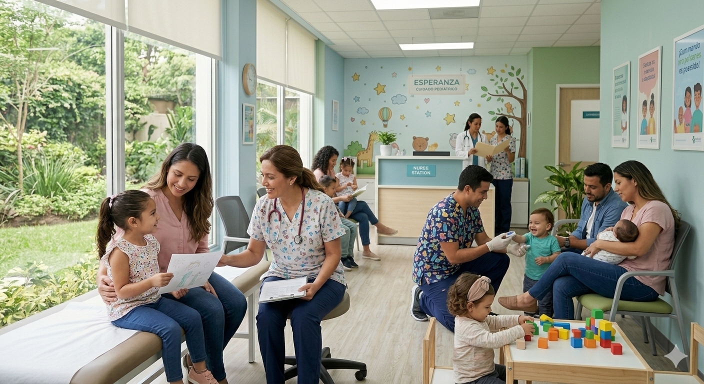
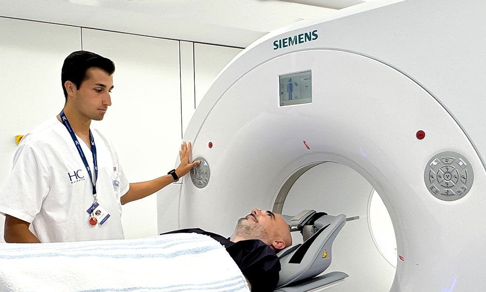

La cooperativa se dedica a brindar servicios de salud integral en el área de medicina general. Su labor principal es ofrecer atención médica primaria y preventiva a la comunidad, garantizando el bienestar de los pacientes y promoviendo hábitos saludables.
La Asociación Cooperativa La Salle, R.L. tiene como misión ofrecer servicios de salud integral, preventiva y curativa a la comunidad de Barrio Unión, garantizando atención accesible, humana y solidaria. Nos comprometemos a trabajar bajo los principios cooperativos de ayuda mutua, equidad y participación democrática, fomentando la inclusión social y el bienestar colectivo. Buscamos no solo atender las necesidades médicas inmediatas, sino también promover la educación en salud, l a prevención de enfermedades y el fortalecimiento de valores comunitarios que impulsen la calidad de vida de nuestros asociados y de la población en general.
Nuestra visión es consolidarnos como una institución cooperativa referente en el sector salud de Barquisimeto y del estado Lara, reconocida por la excelencia en la atención médica, la innovación en sus servicios y el compromiso con el desarrollo sostenible de la comunidad. Aspiramos a ser un modelo de gestión democrática y participativa, donde cada asociado se sienta parte activa de la construcción de un sistema de salud más justo y solidario. Queremos proyectarnos como un centro que integra la atención médica con la promoción de valores humanos, la educación y la cooperación, contribuyendo al bienestar integral y al progreso social de las familias que confían en nosotros.